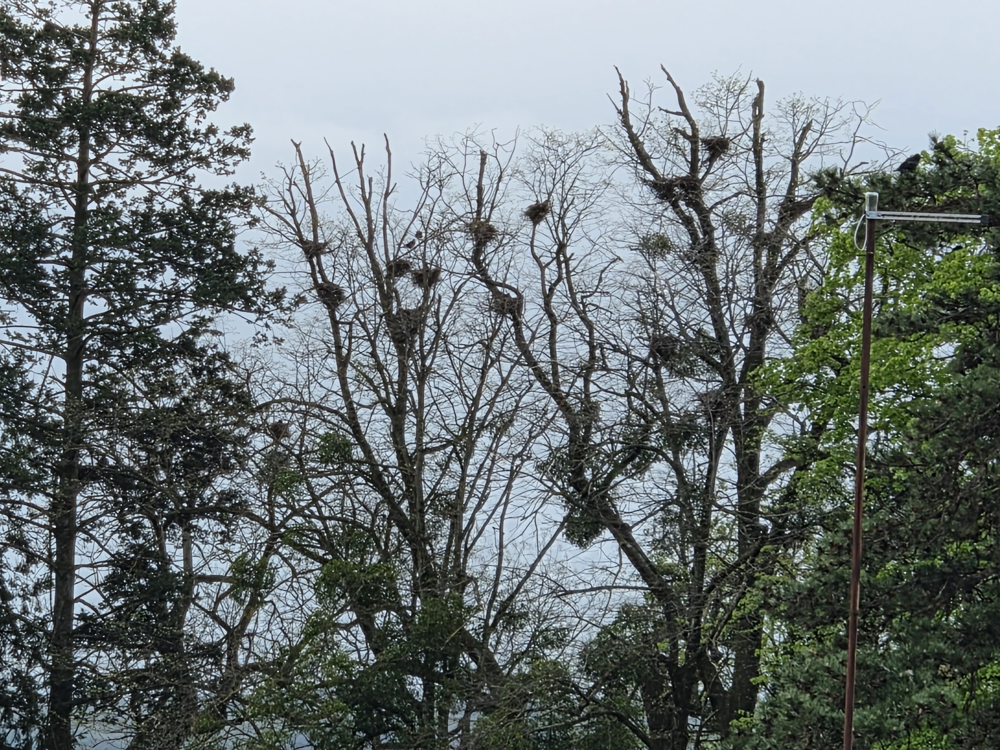
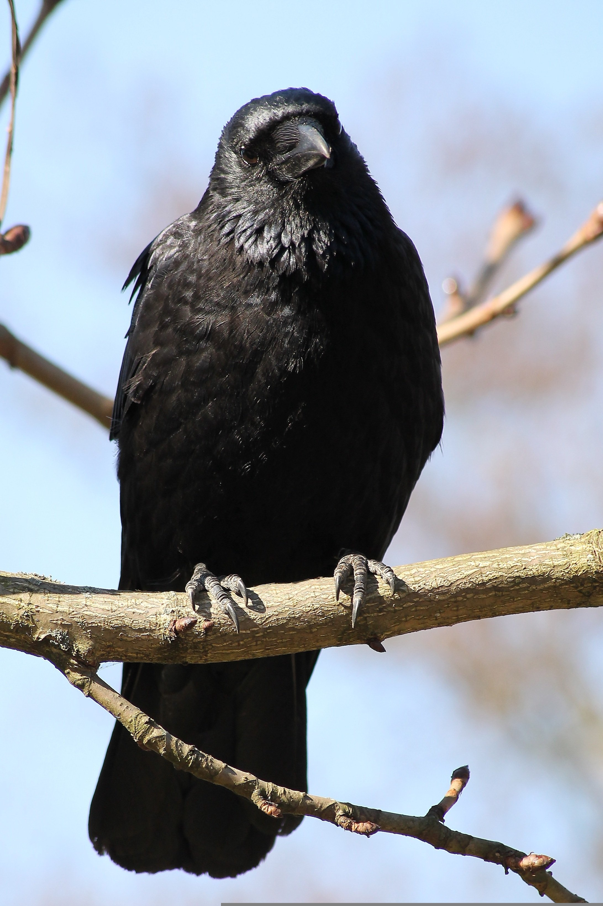
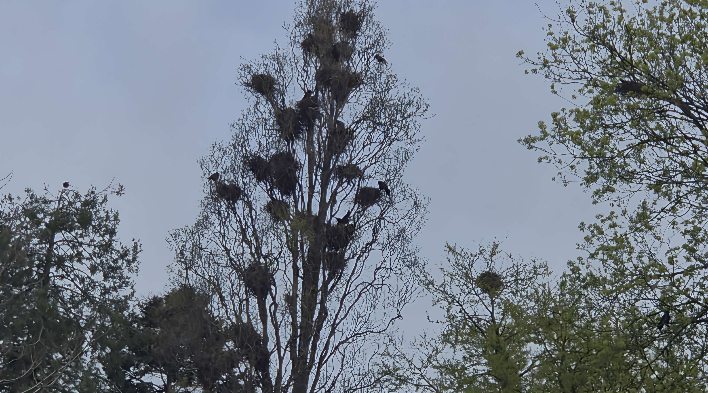
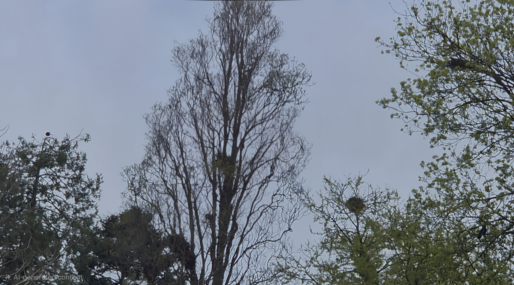

Populacija vrane gaćice u Daruvaru raste iz godine u godinu. Nitko to nije ozbiljno dokumentirao — mi jesmo.


Corvus frugilegus — vrana gaćica — gnijezdi se u kolonijama od tisuća jedinki. Urbanizacija ih tjera sve dublje u gradove. Rezultat su glasne, agresivne ptice koje dijele prostor s građanima — bez ikakvog plana upravljanja.
Četiri tjedna terena, stotine fotografija, razgovori sa stručnjacima i stanovnicima. Svaki zaključak potkrijepljen je dokumentiranim dokazima.
Svaki korak istraživanja podržan je Samsung Galaxy AI funkcionalnostima — kao konkretna istraživačka metoda koja je unaprijedila kvalitetu i doseg projekta.


Samsung Galaxy AI Audio Eraser uklanja pozadinsku buku — glasanje tisuća vrana. Usporedi originalni zapis i AI-pročišćenu verziju.
Zaokruži pticu na ekranu i Google u sekundi prepoznaje Corvus frugilegus. Instant identifikacija vrste bez napuštanja aplikacije.
Rast populacije nije slučajnost — spoj urbanih, agrarnih i upravljačkih faktora stvara idealno stanište za vrane gaćice u gradu.
Sigurnost, toplina i hrana čine grad idealnim za kolonijalni život vrana.
Napuštanje tradicionalnog ratarstva smanjuje hranu na selu — vrane sele u grad.
Nepostojanje sustavnog plana znači da problem raste bez kontrole.
Vrana gaćica zaštićena je Direktivom EU o pticama — kontrole su ograničene.
Predlažemo trostupanjski pristup — od hitnih mjera do inovativnih rješenja koja Daruvar mogu pozicionirati kao primjer dobre prakse.
Transparentnost je dio naše metodologije — svaki korak dokumentiran.
Vrana gaćica nije neprijatelj. Nekontroliran rast populacije signal je dublje neravnoteže. Ovaj projekt je početak razgovora.